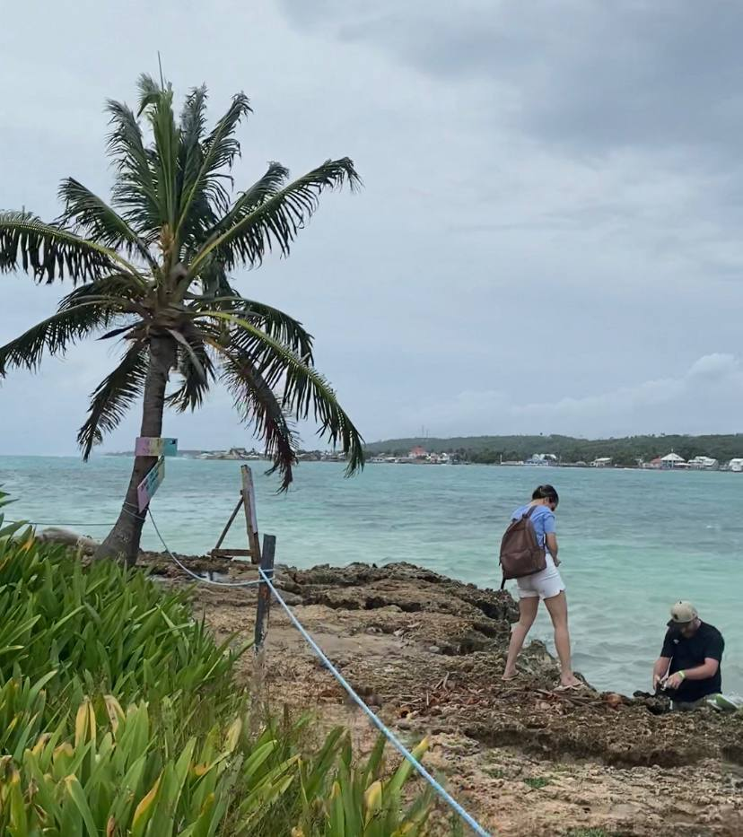

Dreaming of crystal clear Caribbean water? Palm trees lining the shores? Coral reefs and cocktails? Colombia isn't famous for its beaches, but the country has arguably some of the top beaches in the Caribbean.Here are the best beaches you can find around the island.
Spratt Bight
This is the main beach right along the town center. You would think this would make it overcrowded and undesirable, but it's actually a very long beach with lots of room, and it's stunning!This amazing beach is just a few minutes walk away from just about anywhere in town. Along with the beach itself there is a boardwalk style street along the beach with shops, bars, and restaurants. It's a walking only area so no cars in the way!Most of the water is a shallow sandy bottom with some coral here and there further out so it's great for swimming.Just in front of the beach you can easily see the nearby island, Johnny Cay (pronounced like key).
Johnny Cay
This is the island directly north of the main beach. You can get there by taking a speedboat from the main marina. Just so you know, if there is some swell the boat ride can get VERY bumpy and make for a hail mary attempt to leap out of the boat and then avoid it hitting you once you hit shore. But if you survive the trip, you're in picture-perfect paradise.The water isn't too great for swimming here because of a lot of reef and rocks, not to mention loads of people in the few open areas and the boats trying to land. That being said the sapphire blue water looks unreal and the little heart shaped island is absolutely filled with palm trees.If you feel like getting away from the crowds, you can go around to the other side of the island where ou can't see the main island, much less people go there as you can't really swim and it's on the opposite end of where the boats land.
Cocoplum
Another beach on the main island, this one is about 20-30 minutes south of town. There's honestly a bit more crowd and the water isn't an as amazing shade of blue, but without any shops or town it has a more laid back vibe to it.The most interesting part of this beach is that is also has a tiny coral island in front of it, it's so close and shallow you can swim and nearly walk there!

El Acuario
Saving the best for last, this extremely narrow beach can get very crowded, but is worth every second there. The water here is several different shades of light and dark turquiose blue and is just about the clearest water I've seen anywhere, it's mind blowingly beautiful.You'll have to take a boat from the marina but the ride here is sheltered by the reef, so it's always a smooth ride, and it's only a few minutes away. The beach itself is quite small and narrow, but the main attraction is the shallow bars of reef right along the side of the sand. It's basically like a little swimming pool! It's teaming with fish, friendly nurse sharks and rays, and sea urchins (so rent some water shoes).There is another much larger island right alongside this one (Haynes Cay), but without the good beaches and swimming areas so it's best to go there to get away from the crowds or get something to eat.